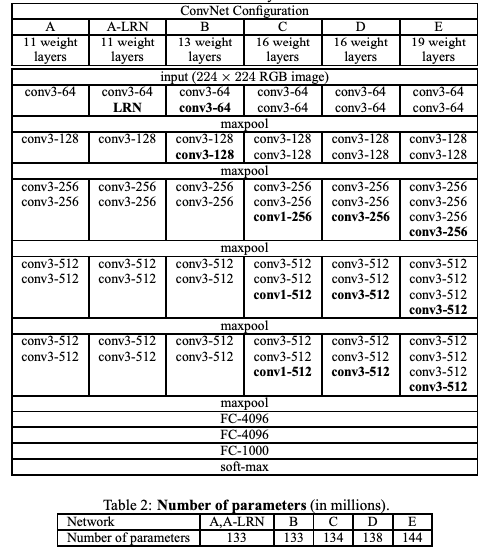

CNN Example Architectures#
This is a very high level view of practical structures of CNNs before the advent of more innovative architectures such as ResNets.
Toy CNN Network#

The example CNN architecture above has the following layers:
INPUT [32x32x3] will hold the raw pixel values of the image, in this case an image of width 32, height 32, and with three color channels R,G,B.
CONV layer will compute the output of neurons that are connected to local regions in the input, each computing a dot product between their weights and a small region they are connected to in the input volume. This may result in volume such as [32x32x12] if we decided to use 12 filters.
RELU layer will apply an element-wise ReLU activation function. This leaves the size of the volume unchanged ([32x32x12]).
POOL layer will perform a downsampling operation along the spatial dimensions (width, height), resulting in volume such as [16x16x12].
FC (i.e. fully-connected) layer, also known as a dense layer, will compute the class scores, resulting in volume of size [1x1x10], where each of the 10 numbers correspond to a class score, such as among the 10 categories of the CIFAR-10 dataset that we are showing here.
VGG Networks#
The VGG networks from Oxford were the first to use much smaller 3×3 filters in each convolutional layers. They have shown that multiple 3×3 convolution in sequence can emulate the effect of larger receptive fields, for examples 5×5 and 7×7. The VGG configuration is shown below:
 VGG Configurations: Different columns represent different depths
We will focus on configuration D - its a complex network, very expensive to train and run but worthy competitor to newer architectures in pure performance terms.
 VGG16 Network
VGG16 Network
"""Contains model definitions for versions of the Oxford VGG network.
These model definitions were introduced in the following technical report:
Very Deep Convolutional Networks For Large-Scale Image Recognition
Karen Simonyan and Andrew Zisserman
arXiv technical report, 2015
PDF: http://arxiv.org/pdf/1409.1556.pdf
ILSVRC 2014 Slides: http://www.robots.ox.ac.uk/~karen/pdf/ILSVRC_2014.pdf
CC-BY-4.0
More information can be obtained from the VGG website:
www.robots.ox.ac.uk/~vgg/research/very_deep/
Usage:
with slim.arg_scope(vgg.vgg_arg_scope()):
outputs, end_points = vgg.vgg_a(inputs)
with slim.arg_scope(vgg.vgg_arg_scope()):
outputs, end_points = vgg.vgg_16(inputs)
@@vgg_16
"""
from __future__ import absolute_import
from __future__ import division
from __future__ import print_function
import tensorflow.compat.v1 as tf
import tf_slim as slim
def vgg_arg_scope(weight_decay=0.0005):
"""Defines the VGG arg scope.
Args:
weight_decay: The l2 regularization coefficient.
Returns:
An arg_scope.
"""
with slim.arg_scope([slim.conv2d, slim.fully_connected],
activation_fn=tf.nn.relu,
weights_regularizer=slim.l2_regularizer(weight_decay),
biases_initializer=tf.zeros_initializer()):
with slim.arg_scope([slim.conv2d], padding='SAME') as arg_sc:
return arg_sc
def vgg_16(inputs,
num_classes=1000,
is_training=True,
dropout_keep_prob=0.5,
spatial_squeeze=True,
reuse=None,
scope='vgg_16',
fc_conv_padding='VALID',
global_pool=False):
"""Oxford Net VGG 16-Layers version D Example.
Note: All the fully_connected layers have been transformed to conv2d layers.
To use in classification mode, resize input to 224x224.
Args:
inputs: a tensor of size [batch_size, height, width, channels].
num_classes: number of predicted classes. If 0 or None, the logits layer is
omitted and the input features to the logits layer are returned instead.
is_training: whether or not the model is being trained.
dropout_keep_prob: the probability that activations are kept in the dropout
layers during training.
spatial_squeeze: whether or not should squeeze the spatial dimensions of the
outputs. Useful to remove unnecessary dimensions for classification.
reuse: whether or not the network and its variables should be reused. To be
able to reuse 'scope' must be given.
scope: Optional scope for the variables.
fc_conv_padding: the type of padding to use for the fully connected layer
that is implemented as a convolutional layer. Use 'SAME' padding if you
are applying the network in a fully convolutional manner and want to
get a prediction map downsampled by a factor of 32 as an output.
Otherwise, the output prediction map will be (input / 32) - 6 in case of
'VALID' padding.
global_pool: Optional boolean flag. If True, the input to the classification
layer is avgpooled to size 1x1, for any input size. (This is not part
of the original VGG architecture.)
Returns:
net: the output of the logits layer (if num_classes is a non-zero integer),
or the input to the logits layer (if num_classes is 0 or None).
end_points: a dict of tensors with intermediate activations.
"""
with tf.variable_scope(
scope, 'vgg_16', [inputs], reuse=reuse) as sc:
end_points_collection = sc.original_name_scope + '_end_points'
# Collect outputs for conv2d, fully_connected and max_pool2d.
with slim.arg_scope([slim.conv2d, slim.fully_connected, slim.max_pool2d],
outputs_collections=end_points_collection):
net = slim.repeat(inputs, 2, slim.conv2d, 64, [3, 3], scope='conv1')
net = slim.max_pool2d(net, [2, 2], scope='pool1')
net = slim.repeat(net, 2, slim.conv2d, 128, [3, 3], scope='conv2')
net = slim.max_pool2d(net, [2, 2], scope='pool2')
net = slim.repeat(net, 3, slim.conv2d, 256, [3, 3], scope='conv3')
net = slim.max_pool2d(net, [2, 2], scope='pool3')
net = slim.repeat(net, 3, slim.conv2d, 512, [3, 3], scope='conv4')
net = slim.max_pool2d(net, [2, 2], scope='pool4')
net = slim.repeat(net, 3, slim.conv2d, 512, [3, 3], scope='conv5')
net = slim.max_pool2d(net, [2, 2], scope='pool5')
# Use conv2d instead of fully_connected layers.
net = slim.conv2d(net, 4096, [7, 7], padding=fc_conv_padding, scope='fc6')
net = slim.dropout(net, dropout_keep_prob, is_training=is_training,
scope='dropout6')
net = slim.conv2d(net, 4096, [1, 1], scope='fc7')
# Convert end_points_collection into a end_point dict.
end_points = slim.utils.convert_collection_to_dict(end_points_collection)
if global_pool:
net = tf.reduce_mean(
input_tensor=net, axis=[1, 2], keepdims=True, name='global_pool')
end_points['global_pool'] = net
if num_classes:
net = slim.dropout(net, dropout_keep_prob, is_training=is_training,
scope='dropout7')
net = slim.conv2d(net, num_classes, [1, 1],
activation_fn=None,
normalizer_fn=None,
scope='fc8')
if spatial_squeeze:
net = tf.squeeze(net, [1, 2], name='fc8/squeezed')
end_points[sc.name + '/fc8'] = net
return net, end_points
vgg_16.default_image_size = 224
# Alias
vgg_d = vgg_16